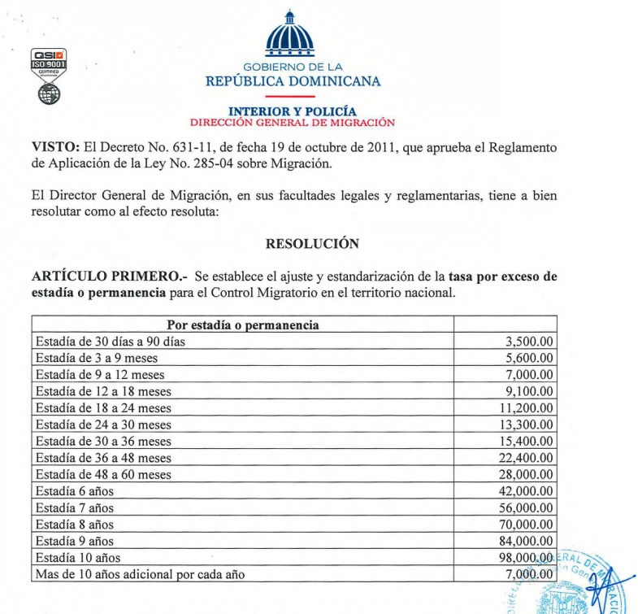

Получение ВНЖ в Доминикане не является сложной процедурой. Тем более, что сейчас всё происходит через интернет. Даже при небольшом знании испанского языка можно попробовать
оформить документы самостоятельно. Либо доверить дело адвокату, который за пару тысяч долларов сделает это за вас.
Но есть одна маленькая загвоздка: сейчас, по новому закону, прежде чем подавать документы на ВНЖ, вы обязательно должны получить в Москве, в Консульстве Доминиканы, так называемую "визу на резиденцию " (без её наличия у вас не примут документы в Миграционном Департаменте в Доминикане, то есть легализоваться у вас без неё не получится).
По новому закону любая деятельность без наличия действующих доминиканских документов расценивается как нелегальная и запрещена. То есть, если у вас нет ВНЖ, то работать вам нельзя. Но если вы высококлассный специалист и сможете получить рабочую визу в Консульстве Доминиканы в Москве, то это решит ваши проблемы.
Проще простого. Выбираете понравившуюся недвижимость и покупаете. Всем иностранцам разрешено приобретать недвижимость без каких-либо ограничений. ВНЖ для этого не требуется. Но и наличие в собственности недвижимости не даёт никаких привилегий в плане получения ВНЖ.
По закону один месяц. После этого периода нахождение в стране без действующих документов рассматривается как нелегальное и к нарушителю могут применяться меры, вплоть до депортации. Владеющие английским языком могут почитать дискуссию о нелегалах на форуме DR1.
Очень усреднённо из расчёта на месяц (не шикуя, но и не бедствуя):
Визу на резиденцию не получить, по линии инвестора не прохожу, просто приехать на месяц туристом не хочу. Хочу приехать и пожить год-два-три или сколько захочется. Как мне быть?
Это вполне решаемо при наличии следующих факторов:

Если соблюдение всех этих условий вас не пугает, то никто не вправе запретить вам исполнить своё желание. Покупаете билет и летите в Доминикану!